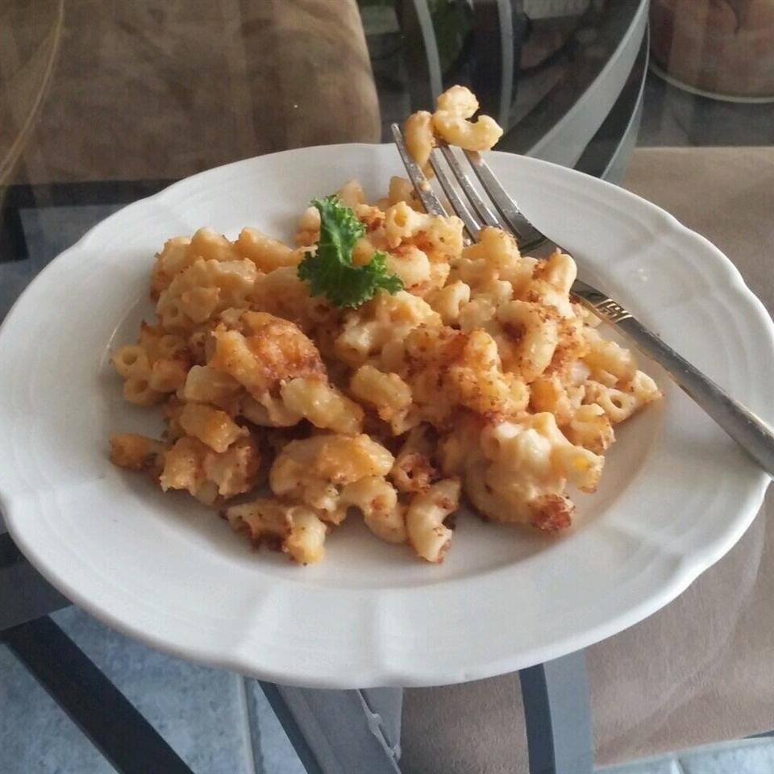

Mac and Cheese

Packed with richness and cheesiness. This is a dish that never dissapoints
Ingredient List
- 8oz uncooked elbow macaroni
- 2 cups shredded sharp Cheddar cheese
- 1/2 grated Parmesan cheese
- 3 cups Milk
- 1/4 cup butter
- 2 1/2 tablespoons all-purpose flour
- 2 tablespoons butter
- 1/2 cup bread crumbs
- 1 pinch paprika
Directions to Deliciousness
- Cook macaroni according to package directions. Drain.
- In a saucepan, melt butter or margarine over medium heat.
Stir in enough flour to make a roux. Add milk to roux slowly, stirring constantly.
Stir in cheeses, and cook over low heat until cheese is melted and the sauce is a little thick.
Put macaroni in large casserole dish, and pour sauce over macaroni. Stir well.
- Melt butter or margarine in a skillet over medium heat. Add breadcrumbs and brown.
Spread over the macaroni and cheese to cover. Sprinkle with a little paprika to flavor.
- Bake at 350 degree F (175 degree C) for 30 minutes. Serve.